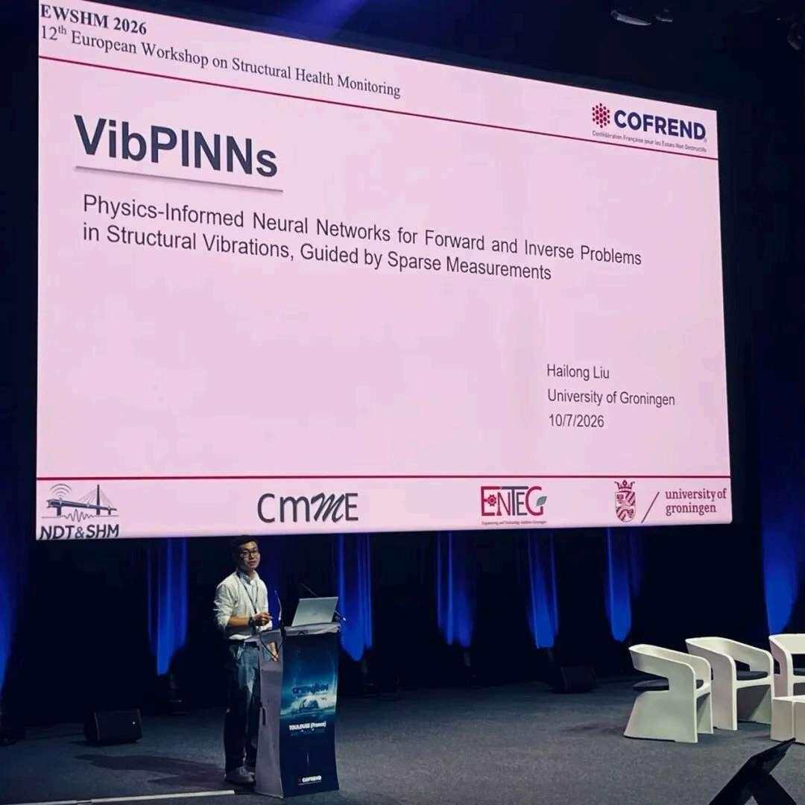
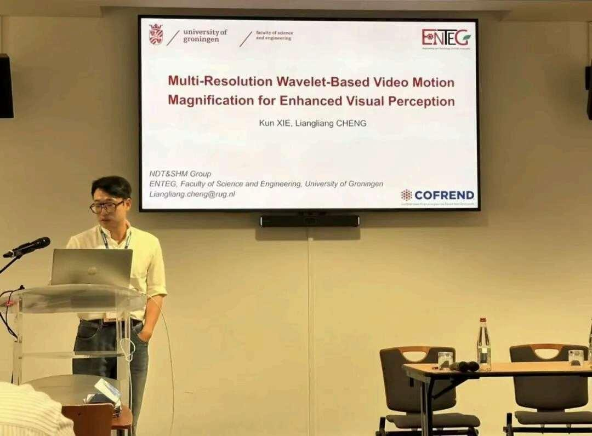
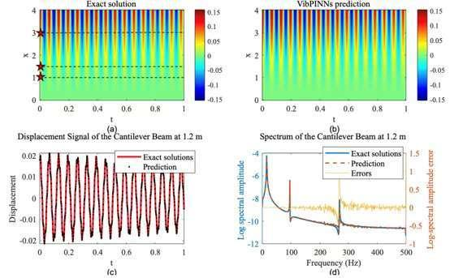
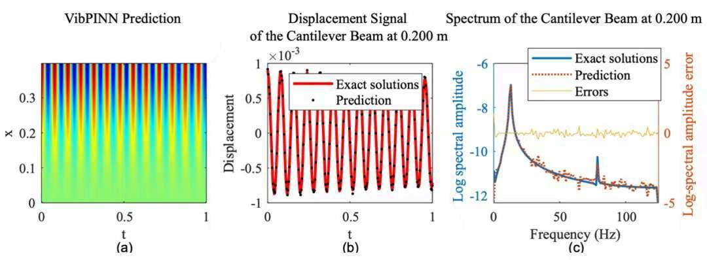

Our group presents VibPINNs and wavelet-based motion magnification at EWSHM 2026
The NDT & SHM Group shared two research contributions at the 12th European Workshop on Structural Health Monitoring (EWSHM 2026), held in Toulouse, France, from July 7 to 10, 2026. The event brought together researchers and engineers to discuss advances in structural health monitoring and their applications across aerospace, civil engineering, and the energy sector.
VibPINNs: vibration reconstruction from sparse measurements
Our PhD student Hailong Liu delivered an oral presentation on VibPINNs: Enhanced Physics-Informed Neural Networks for Structural Vibration Analysis with Sparse Measurements.
In practical monitoring, only a small number of sensors may be available, and complete boundary conditions can be difficult to obtain. VibPINNs combines physical equations with time-domain and frequency-domain information from sparse measurement locations to reconstruct structural vibration responses. The approach can predict responses at locations without sensors and identify unknown physical parameters, such as damping.
The work was evaluated using simulations and experiments on Euler–Bernoulli cantilever beams, demonstrating the potential of physics-informed learning for vibration analysis with limited measurements.
Wavelet-based video motion magnification
The group also contributed the conference paper Multi-Resolution Wavelet-Based Video Motion Magnification for Enhanced Visual Perception, authored by our PhD student Kun Xie and Liangliang Cheng. Dr. Cheng delivered the oral presentation.
Compared with conventional phase-based magnification, the proposed multi-resolution wavelet approach reduces edge artifacts at the same magnification factor, improving the quality of magnified videos and making small motions easier to observe.
These presentations highlighted the group's complementary work on physics-informed vibration modelling and camera-based measurement, and provided opportunities for discussion with the international SHM community.





